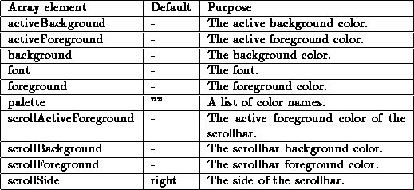
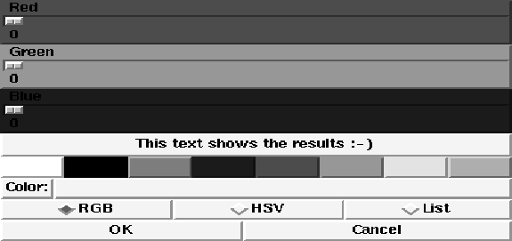
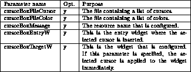

This template defines a new procedure named FSBox. Calling this procedure pops up a dialog box to select a file. The dialog box is either modal or non-modal. If the dialog box is modal, the procedure returns the selected file name. Otherwise, the specified Tcl command script is evaluated. Many features support the file selection. There exists a path history, available as a pull down menu (at the label left from the current path name). The label left from the selection pattern contains a pull down menu with all possible extensions. When typing path and file names by hand, the Tab key performs file name completion. The file selector box has a special mode for selecting bitmaps (pixmaps) where the currently selected picture is displayed in a display area. The procedure gets the following parameters:

To configure the different aspects of the file box, there exists a global array named fsBox. A default value of ``-'' means that the Tk default value is used. This array contains elements that control the file box (color, font etc.):
Array element & Default & Purpose

A small example of an invocation may look like this:
FSBox
This would create the following dialog box:

Figure: The template FSBox